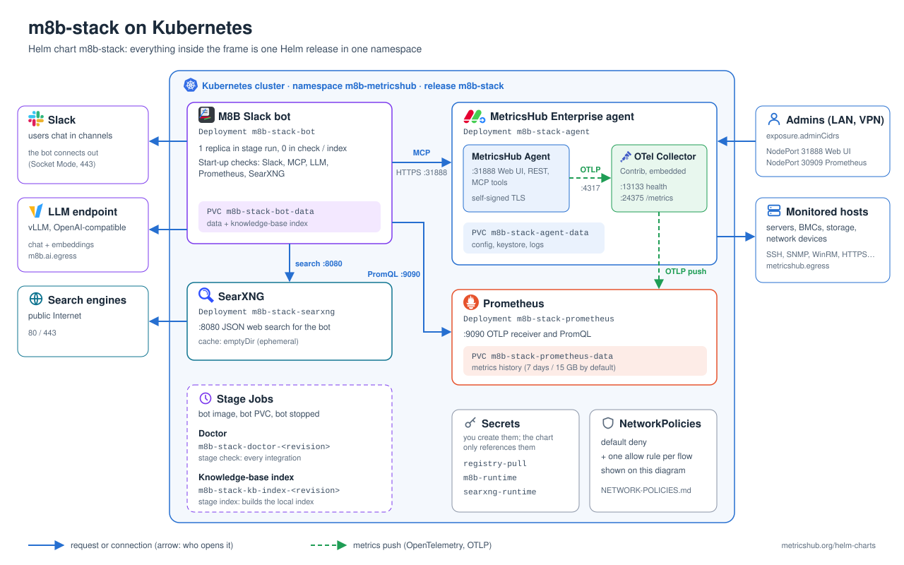

MetricsHub
MetricsHub Helm Charts 1.0.0
-
Home
- m8b-stack
M8B Stack Helm chart
[1]
[2]
MetricsHub Enterprise Agent (with its embedded OpenTelemetry Collector), Prometheus, SearXNG and the M8B Slack bot. Readable YAML templates, configurable resources, retained PVCs, staged diagnostics and local KB indexing.
helm repo add metricshub https://metricshub.github.io/helm-charts
helm repo update
helm show values metricshub/m8b-stack > values-reference.yaml
# or, without a repository: oci://ghcr.io/metricshub/charts/m8b-stack
Architecture

- The agent pushes metrics to the collector running in the same container, over loopback without TLS: nothing outside the Pod can reach port 4317, and the Pod keeps its real hostname.
- The bundled collector config (
files/config/otel-config.yaml) exports to the in-cluster Prometheus and exposes a Prometheus scrape endpoint on 24375. Replace it entirely withmetricshub.otel.configTextto add exporters (Datadog, New Relic, BMC Helix, remote write…), starting from the official example[3]. - Prometheus promotes OTLP resource attributes (
host.name, …) to labels, so PromQL can filter on them.
Related documentation
The chart deploys and wires the components; their own documentation covers what they do and how to configure them.
MetricsHub Agent
- MetricsHub documentation[4]: concepts, connectors, metrics.
- Installing on Docker, Enterprise edition[5]: the same image as this chart, with its ports (31888, 13133, 24375), paths and embedded collector.
- Resource settings[6]: what to put in
metricshub.yaml(metricshub.config.textormetricshub.config.existingSecret) to monitor your hosts.
M8B Slack bot
- M8B Slack Bot[7]: overview and how to create the Slack app[8] (bot and app-level tokens).
- Configuration reference[9]: every environment variable. Variables the chart manages (endpoints, models, data and knowledge-base settings) have their own value under
m8b; set the others, such as the media store, throughm8b.extraConfig(non-secret) orm8b.extraEnv(secretKeyRef). The chart rejects a managed variable inm8b.extraConfig. - AI backends[10]: which LLM backends work, what they must provide, reference models.
Prerequisites
- A NetworkPolicy-enforcing CNI (policies are on by default), IPv4 Linux nodes, a StorageClass (or prepared local/existing volumes) and outbound access to Slack and your LLM endpoints.
- Credentials for the private registry
docker.metricshub.com(see below). Both the MetricsHub Enterprise image and the M8B bot image are pulled from it. A public chart does not make these images public. - A Slack app (how to create it[8]) and an LLM chat endpoint (supported backends[10]); an embedding endpoint for the KB.
Private registry access (docker.metricshub.com)
-
Get credentials. MetricsHub Enterprise customers receive a registry username and password in their onboarding email. Otherwise request access through support.metricshub.com[11] or metricshub.com/pricing[12].
-
Check them from a workstation (optional but saves a failed rollout):
docker login docker.metricshub.com docker pull docker.metricshub.com/metricshub-enterprise:3.9.07 docker pull docker.metricshub.com/metricshub/m8b-slack:3.1.0 -
Give them to Kubernetes: GETTING-STARTED.md[13] step 4 writes them without echoing the password, step 5 creates the
registry-pullSecret that every Pod of the chart references, and step 5b checks from the cluster that both images can be pulled. Do not reuse~/.docker/config.json: with a credential helper it holds no usableauthentry.
Values
Copy examples/portable.yaml (CSI storage) or examples/lab-values-example.yaml (on-premises lab with local volumes, used by GETTING-STARTED.md[13]) to a private site file and REPLACE its example values: Slack workspace, chat/embedding model IDs and endpoints, cluster CIDRs, monitored networks and StorageClass. Do not put Secret values in YAML. Maps merge, lists replace, and later -f overrides earlier files. values.schema.json rejects unknown keys and the chart rejects incompatible combinations.
helm pull metricshub/m8b-stack --untar
cp -n m8b-stack/examples/portable.yaml my-values.yaml # edit every REPLACE marker
# Offline render only; nothing is applied.
helm template demo metricshub/m8b-stack --namespace demo -f my-values.yaml --set stage=run > rendered.yaml
Resource names follow Helm conventions: <release>-m8b-stack-<component> (just <release>-<component> when the release name already contains m8b-stack); override with nameOverride / fullnameOverride. Several releases can share a namespace. Renaming a release creates new PVCs: do not rename an installed one.
What the agent can reach
With network policies on, the agent Pod only reaches DNS, Prometheus and the destinations listed in metricshub.egress. An empty list means nothing is monitored. The same list governs the embedded collector's exporters (for a SaaS over the Internet: 0.0.0.0/0 minus private ranges, port 443). See examples/portable.yaml.
Set network.podCidrs and network.serviceCidrs to the real cluster ranges. They are then excluded from public egress, and any metricshub.egress rule that overlaps them is rejected at render time, unless an except entry covers the cluster range or network.allowClusterCIDROverlap: true records that the overlap was reviewed.
To scrape the collector (24375) or probe its health (13133) from outside the Pod, list the trusted source CIDRs in metricshub.otel.ingressCidrs. The ClusterIP Service <fullname>-agent exposes both ports.
MCP TLS
The agent serves its Web UI, REST API and MCP endpoint on 31888 with its own self-signed certificate, so the bot must accept it: m8b.allowSelfSignedMcp defaults to true. This traffic never leaves the cluster and is limited by network policies. Set it to false only after installing a certificate trusted by the bot in the agent keystore (/opt/metricshub/lib/security, on the agent PVC).
Secrets: supplied by the operator, never printed by the chart
| Default name | Required content |
|---|---|
registry-pull |
dockerconfigjson for docker.metricshub.com (see above) |
m8b-runtime |
SLACK_BOT_TOKEN, SLACK_APP_TOKEN, AI_API_KEY; MCP_AGENT_TOKEN generated by this agent (step 8) |
m8b-runtime (optional) |
AI_EMBEDDING_API_KEY if the embedding endpoint uses a different key |
searxng-runtime |
SEARXNG_SECRET when SearXNG is enabled |
Names are configurable under secrets. Use a Secret manager, an encrypted deployment workflow or secure local tooling. Do not commit actual Secrets, .env files, kubeconfigs, rendered private values or registry credentials.
Install
Follow GETTING-STARTED.md[13]: installing Helm, discovering your cluster settings, values, Secrets, volumes, then the staged install. In short, a helm upgrade applies ONLY the selected stage:
| Stage | Runs | Before moving on |
|---|---|---|
core |
agent, Prometheus, SearXNG | create the MetricsHub API key in m8b-runtime:MCP_AGENT_TOKEN |
check |
Doctor Job (bot stopped) | Doctor logs show success |
run |
the bot | a real Slack conversation works |
index |
KB index Job (bot stopped beforehand) | Job succeeded; delete it, then run again |
There is no hook or operator: each step is an explicit command, so the bot never shares its PVC with a Job. Doctor and index Jobs carry the Helm revision in their name, so a stage can be re-run without an immutable-Job error; Helm does not remove a Job from a failed revision, so delete it before retrying. helm uninstall keeps PVCs, PVs and Secrets; deleting data is a separate, deliberate action.
Validation
Network isolation uses standard NetworkPolicies by default, so Cilium is not required. On a Cilium cluster you may opt into CiliumNetworkPolicies with network.provider: cilium; see NETWORK-POLICIES.md[14]. CI runs scripts/test.sh (lint, render matrix, rejected values) on every change. That is offline only: on a representative cluster, test allowed AND denied traffic, DNS, storage, Doctor, KB indexing and a real Slack retrieval before declaring production readiness.
- [1] https://github.com/MetricsHub/helm-charts/releases?q=m8b-stack
- [2] CHANGELOG.html
- [3] https://metricshub.com/docs/latest/resources/config/otel/otel-config-example.yaml
- [4] https://metricshub.com/docs/latest/
- [5] https://metricshub.com/docs/latest/installation/installing-on-docker?edition=enterprise
- [6] https://metricshub.com/docs/latest/configuration/resource-settings
- [7] https://metricshub.org/m8b-slack/
- [8] https://metricshub.org/m8b-slack/#1-create-the-slack-app
- [9] https://metricshub.org/m8b-slack/CONFIGURATION.html
- [10] https://metricshub.org/m8b-slack/BACKENDS.html
- [11] https://support.metricshub.com
- [12] https://metricshub.com/pricing
- [13] GETTING-STARTED.html
- [14] NETWORK-POLICIES.html